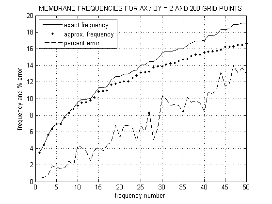

% Plot first fifty approximate and exact frequencies [w,wex,modes,x,y,nx,ny,ax,by]=recmemnfr; m=1:min([50,length(w),length(wex)]); pcter=100*(wex(m)-w(m))./wex(m); clf; plot(m,wex(m),'k-',m,w(m),'k.',m,pcter,'k--') xlabel('frequency number'); ylabel('frequency and % error') legend('exact frequency','approx. frequency',... 'percent error',2) s=['MEMBRANE FREQUENCIES FOR AX / BY = ',... num2str(ax/by,5),' AND ',num2str(nx*ny),... ' GRID POINTS']; title(s), grid on, shg